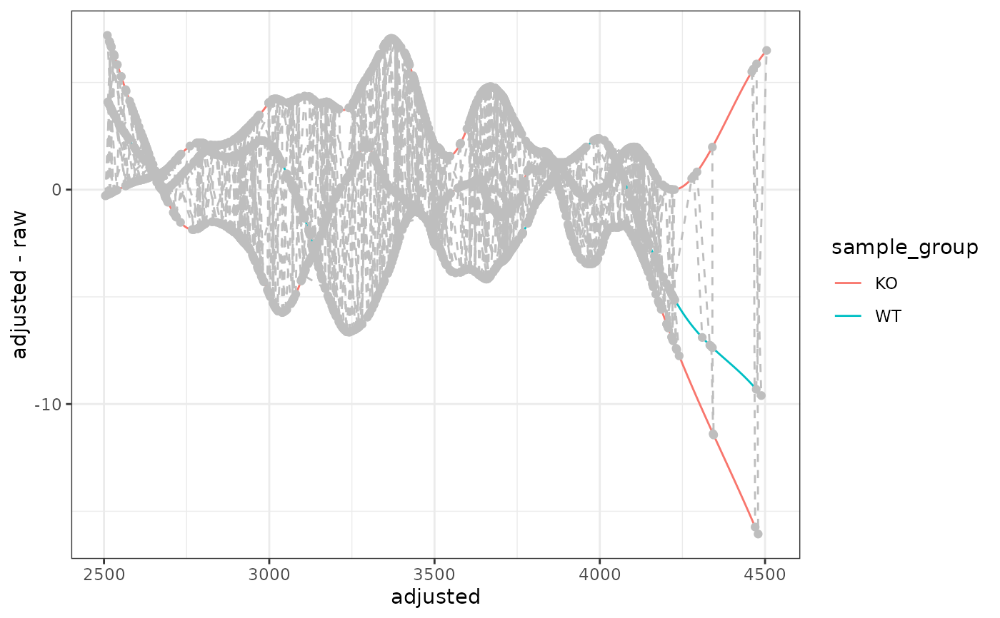

ggplot2 Version of plotAdjustedRtime
Source:R/AllGenerics.R, R/gplotAdjustedRtime-methods.R
gplotAdjustedRtime.RdVisualizes retention time correction by plotting the difference between
adjusted and raw retention times across samples. This is a ggplot2
implementation of XCMS's plotAdjustedRtime() function, enabling
modern visualization and interactive plotting capabilities.
Usage
gplotAdjustedRtime(
object,
color_by,
include_columns = NULL,
adjustedRtime = TRUE
)
# S4 method for class 'XCMSnExp'
gplotAdjustedRtime(
object,
color_by,
include_columns = NULL,
adjustedRtime = TRUE
)
# S4 method for class 'XcmsExperiment'
gplotAdjustedRtime(
object,
color_by,
include_columns = NULL,
adjustedRtime = TRUE
)Arguments
- object
An
XCMSnExporXcmsExperimentobject with retention time adjustment results.- color_by
Column name from sample metadata to use for coloring lines. This should be provided as an unquoted column name (e.g.,
sample_group). For XCMSnExp objects, this comes frompData(object). For XcmsExperiment objects, this comes fromsampleData(object).- include_columns
Character vector of column names from sample metadata to include in the tooltip text. If
NULL(default), all columns are included.- adjustedRtime
Logical, whether to use adjusted retention times on the x-axis. Default is
TRUE.
Value
A ggplot object showing retention time adjustment. Each line
represents one sample, and grey points/lines show the peak groups used
for alignment (when using PeakGroupsParam).
Details
The function:
Plots adjusted RT vs. the difference (adjusted RT - raw RT)
Shows one line per sample colored by the specified variable
Overlays peak groups used for alignment (grey circles and dashed lines)
Includes tooltip-ready text for interactive plotting with plotly
The grey circles represent individual peaks that were used for alignment, and the grey dashed lines connect peaks from the same feature across samples.
See also
plotAdjustedRtime for the original XCMS implementation
Examples
# \donttest{
library(xcmsVis)
library(xcms)
library(faahKO)
library(MsExperiment)
#> Loading required package: ProtGenerics
#>
#> Attaching package: ‘ProtGenerics’
#> The following object is masked from ‘package:stats’:
#>
#> smooth
library(BiocParallel)
# Load example data
cdf_files <- dir(system.file("cdf", package = "faahKO"),
recursive = TRUE, full.names = TRUE)[1:3]
# Create XcmsExperiment and perform basic workflow
xdata <- readMsExperiment(spectraFiles = cdf_files, BPPARAM = SerialParam())
MsExperiment::sampleData(xdata)$sample_group <- c("KO", "KO", "WT")
# Peak detection
cwp <- CentWaveParam(peakwidth = c(20, 80), ppm = 25)
xdata <- findChromPeaks(xdata, param = cwp, BPPARAM = SerialParam())
# Peak grouping
pdp <- PeakDensityParam(sampleGroups = c("KO", "KO", "WT"),
minFraction = 0.4, bw = 30)
xdata <- groupChromPeaks(xdata, param = pdp)
# Retention time adjustment
pgp <- PeakGroupsParam(minFraction = 0.4)
xdata <- adjustRtime(xdata, param = pgp)
#> Performing retention time alignment using 882 anchor peaks.
# Create plot
p <- gplotAdjustedRtime(xdata, color_by = sample_group)
print(p)

# }